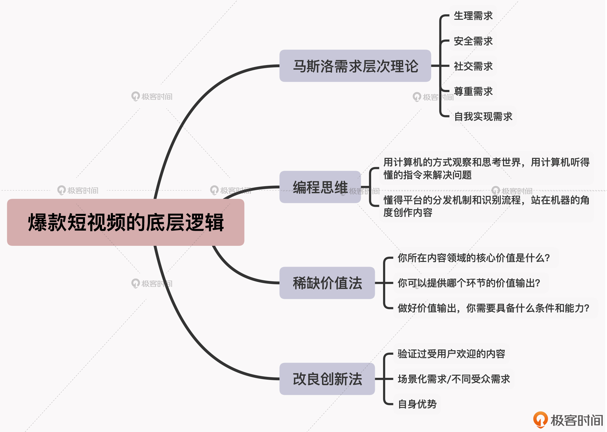

- 00 开篇词 短视频时代下，怎么把握好变现风口？.md.html
- 01 爆款短视频的底层逻辑：用心拍的短视频为啥没人看？.md.html
- 02 爆款短视频的底层逻辑：如何轻松打造自我特色？.md.html
- 03 精益创业法：如何快速跨过从0到1这道坎？.md.html
- 04 SWOT法：这么明显的个人优势你为啥就是看不到？.md.html
- 05 效用函数法：如何用量化的方式进行高效创作？.md.html
- 06 二次创新实验法：如何打造个人的差异化定位？.md.html
- 07 平台定位：如何选择最适合自己的创作平台？.md.html
- 08 如何快速找到各大短视频平台的正确切入点？.md.html
- 09 选题（上）：如何利用思考清单找到合适选题？.md.html
- 10 选题（下）：如何为不同的内容定制合适选题？.md.html
- 11 优劣分析法：如何快速筛选适合创作的视频素材？.md.html
- 12 标题（上）：如何利用微创新巧妙找到爆款标题？.md.html
- 13 标题（下）：如何用对号入座的方式抓住标题亮点？.md.html
- 14 视频封面（上）：如何快速抓住用户注意力？.md.html
- 15 视频封面（下）：如何传递最有价值的信息？.md.html
- 16 视频剪辑：如何轻松掌握视频化剪辑的三大公式？.md.html
- 17 效果反馈法：剪辑很容易，为什么你却一直学不会？.md.html
- 18 剪辑对比（上）：如何避开常见的短视频剪辑陷阱？.md.html
- 19 剪辑对比（下）：如何利用剪辑技巧提升视频质量？.md.html
- 20 拉片法：用电影创作的方式学习爆款短视频运营技巧.md.html
- 21 用户留存率：为什么粉丝很多但忠实拥趸却很少？.md.html
- 22 点赞率（上）：如何有效提升短视频的点赞量？.md.html
- 23 点赞率（下）：三种方法轻松提升用户对内容的认可度.md.html
- 24 上瘾机制：为什么视频观看量很高却没人留言？.md.html
- 25 避坑指南：为什么很多短视频账号中途做不下去了？.md.html
- 26 如何找到适合自己的短视频变现模式？.md.html
- 27 多元化变现：如何明确不同创作阶段的变现任务？.md.html
- 28 多内容变现：不同内容的主打变现模式是什么？.md.html
- 结束语 一切成大事者，都是终身学习者.md.html
- 捐赠
02 爆款短视频的底层逻辑：如何轻松打造自我特色？
你好，我是周维。这节课，我会通过丁真、李子柒和阿雅小厨的案例，来给你讲解另外两种打造爆款短视频背后的底层逻辑：稀缺价值法和改良创新法。
相比马斯洛原理和编程思维这两种侧重于创作方法与平台算法的底层逻辑，今天要讲的两种理论，主要的优势在于能够利用差异化策略，帮你在创作中打造出自我特色，让你的内容在众多的同类短视频中脱颖而出。
丁真、李子柒是如何应用稀缺价值法的？
我们先来看看稀缺价值法。
在我看来，所有短视频其实都是在为用户提供价值，比如搞笑类内容提供的价值是开心、欢乐，旅行类内容提供的价值是发现世界，汽车类内容提供的价值是弥补用户的汽车知识短板。
那么你肯定有疑问了，既然所有的短视频内容都是创造价值，那为什么有的内容会是爆款，而有的内容却无人问津呢？
就比如说，前段时间，有个藏族小伙丁真被人拍了一段自己在家乡行走的短视频后，一夜爆红。这条视频跟其他“帅哥”类短视频一样，都只是展现出了自己帅气的一面。只不过丁真极具识别性的脸和原生态的气质，让很多网友都给出了极高的评价。不知道你是什么感觉，反正我第一次看到这个脸庞黝黑、笑容纯真的小伙时，也马上就被吸引住了。
而这也引发了网友的一阵讨论：丁真是怎么火起来的呢？同样都是拍帅哥，为啥偏偏丁真能火呢？
其实，在同类的短视频领域，一个短视频能够成为爆款，是因为遵循了稀缺价值法。
什么叫稀缺价值法呢？
所谓的稀缺价值，就是指一个视频内容中所具备的独特的、同类型作品中稀缺的核心价值。我们在创作短视频的每个环节当中，都是为了能够体现出这个核心价值。
所以，稀缺价值法就是通过分析短视频创作中每个环节的价值（比如拍摄语言、剪辑方式、视频风格、表达方式等），从中找到突破口，将其打造为视频内容的核心价值点（即卖点），从而让自己具备较强的内容竞争力。
那么我们再回头来看丁真这个案例。同样都是帅哥，丁真在视频里并没有展现出什么过硬的才艺、知识或观点，但是他纯朴的个性、原生态且极具识别性的颜值，以及高原地区优美的自然环境，共同构成了其视频独一无二的竞争力，因此也就区别于那些主流审美的“帅哥”类视频，从而得以走红。
既然如此，那我们要如何将稀缺价值法运用到自己的短视频创作中呢？
我一直认为，一个好问题胜过一个好答案。当我们能够问出一个非常清晰、明确的问题时，我们也会得到自己想要的答案。
所以，这里我给你总结了三个“问题”，你可以根据这三点来判断某个爆款短视频的创作逻辑，以及将其应用到自己的内容创作当中：
- 你所在内容领域的核心价值是什么？找到自己在内容创作中最突出的优势，也就是利用差异化的策略来打造内容的独特之处。
- 你可以提供哪个环节的价值输出？找出每一块内容的核心价值，并与已经找到的创作优势结合起来，由此构成整个视频内容的核心竞争力。
- 做好价值输出，你需要具备什么样的条件和能力？当你抓住了内容的核心竞争力后，你还需要通过什么样的条件（如场景人物设置、氛围营造、BGM搭配等）、什么样的表现形式（如镜头语言、人物装束、常用口头禅等）给表达出来。
我举个例子。美食领域创作者李子柒，在微博、YouTube上的粉丝均已突破千万，每个视频的观看量都非常高，那么她是如何运用稀缺价值法的呢？
现在我们就根据前面总结的三个问题，来分析一下：
- 首先，同样是美食领域，大部分创作者可能都认为自己最大的优势就是可以做出色香味俱全的菜品，而李子柒抓取自己最大的优势，反而是通过精致、过硬的视频质量，将田园生活的美发挥到了极致，这就让她在一众美食视频中打出了差异化。
- 然后，我们能发现在李子柒的视频中，每一帧都像是身处在世外桃源的感觉，而这就是她对外传递的核心价值：返璞归真、唯美的田园美食生活。那她具体是在哪个环节进行价值输出呢？答案就是视频氛围的营造上。
- 那么，为了能够形成一种恬静、优美、和谐的视觉氛围，李子柒对镜头画面的把控、配乐的选取以及自己的形象设计都是非常严格的，而且为了凸显其核心价值，她的视频内容还会呈现出人与自然和谐相处的一面，目的就是服务“返璞归真、唯美”这个核心价值。
所以总而言之，运用好稀缺价值法，找到自己在创作内容时的最大优势，分析列举出各部分内容的价值并与自身优势相结合，确定可以进行价值输出的具体环节以及自己所具备的条件，就一定会让你的短视频内容成为用户心中不可或缺的选择。
好了，下面我们再来看看改良创新法。
改良后，阿雅小厨的创作公式是什么？
一说到创新，很多人都以为是要做出来“人无我有”，独树一帜。但是实际上，刻意地强调标新立异只会让自己忘记初心，远离最初设定的目标，还可能会让事情陷入被动。
比如说啊，之前就有一家手机厂商觉得做手机必须要标新立异，将手机背面原来的金属壳换成了玻璃壳，嘿，从外表看确实非常漂亮，你说这创新怎么样？果然，产品一推到市场上吸引了很多人的眼球，但一看销量就发现卖得非常一般，甚至没多久就下线了。主要原因就是这个创新看着标新立异，但是根本不实用，相反还增加了加工难度，这样的创新没有多大的价值。
所以我的观点是，创新并不是凭空创造新物种，而是在原有的基础之上进行差异化的组合，才会更加高效、可行。那么这种在原有领域利用不同的场景化需求，通过放大某个特点来打造新品类的方式，就是改良创新法的特征。
在短视频创作中，我们同样可以根据自己所擅长的内容，去找找短视频平台上的专属领域中，已经被验证、数据反馈优质、受用户欢迎的成熟内容，然后在这些内容上进行创新升级（如围绕场景化需求、不同受众需求进行创新），再加上自己专属的元素，就是最有效的内容创新。
如果使用公式来表达的话，就是：
被验证的受用户欢迎的内容+场景化需求/不同受众需求+自身优势=运用改良创新法来打造热门内容
举个例子。我们知道，美食领域是一个很大的创作门类，不少人的视频主题可能都是跟“吃”或“做”有关。那么这样要如何突出自己的内容，并将其打造为热门视频呢？
抖音上有位粉丝数过千万的创作者“阿雅小厨”，她就是专门围绕老人、孩子来创作美食内容。比如因为秋冬季节，老人孩子容易咳嗽，在这期视频里她就制作了金橘膏，点赞量超过了120万，转发分享达14万，留言评论也有1万多人。
也就是说，阿雅小厨利用改良创新法，选择了不同年龄层都喜爱的美食领域作为自己视频的主要内容类型，然后面对受众群体去细分创作内容，她没有像其他创作者一样去制作一些川菜、鲁菜、粤菜的美食教程，而是会围绕老人、孩子平时的饮食需求进行创作，因为她的最大优势是一名营养师。
你看，经过这样的改良后，她的创作公式就是：
美食领域（已经验证各个平台都受欢迎）+场景化需求/不同受众需求（老人、孩子在不同时期的饮食需求）+自身优势（职业是营养师，更受用户信赖）
如此一来，阿雅小厨就在美食领域的内容创作中找到了自己的一席之地。同时，也在用户心中植入了区别于其他美食创作者的标签，减少了用户迁移的成本。
其实，经过这几年的耕耘发展，各个短视频平台早已脱离野蛮生长的阶段了，大家都在为满足用户多元化的内容需求进行垂直深耕。那么对于平台这样的发展趋势而言，如果想要让自己的短视频内容更有新意，就必须通过改良创新法的方式，找到自己与其他创作者不一样的地方，在差异化的基础上找到适合自己的创作之路。
小结
这节课，我希望你能记住以下两个重点：
- 关于稀缺价值法，你需要把握三点：你所在内容领域的核心价值是什么？你可以提供哪个环节的价值输出？做好价值输出，你需要具备什么样的条件和能力？
- 改良创新法的公式：被验证的用户喜好内容+场景化需求/不同受众需求+自身优势。
当你站在价值输出的维度来进行创作的时候，我建议你将稀缺价值法的“三问”写在自己经常能看到的地方，以便于对号入座。当你的创作经验积累起来了之后，这个方法就会成为你短视频创作知识体系中的一部分。
最后我还想说的是，在短视频创作中，所谓高手，并不是时常可以带来惊喜，而是每一次都可以平稳输出，在不断输出中找到适合自己的一套晋级之路。这两节课所提到的四种打造爆款短视频的基本盘，就可以成为你创作路上的有力抓手。
关于这两节课的讲解内容，我整理成了一张思维导图，供你复习和回顾。

思考题
请你结合今天的学习内容，找找哪些爆款短视频的底层逻辑是符合稀缺价值法和改良创新法的？如果让你用今天讲到的这两个方法去分析一下自己的视频内容，你会得出什么结论？
欢迎给我留言，分享你的答案。相信经过深度思考的回答，你在学习或创作短视频的时候会有更深的理解与收获。
© 2019 - 2023 Liangliang Lee. Powered by gin and hexo-theme-book.